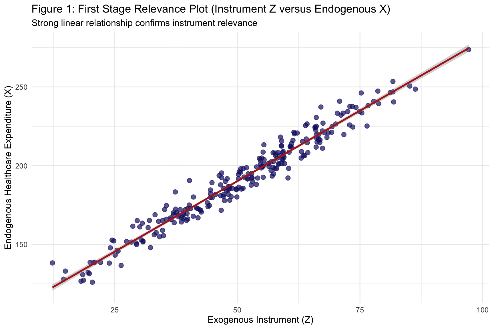
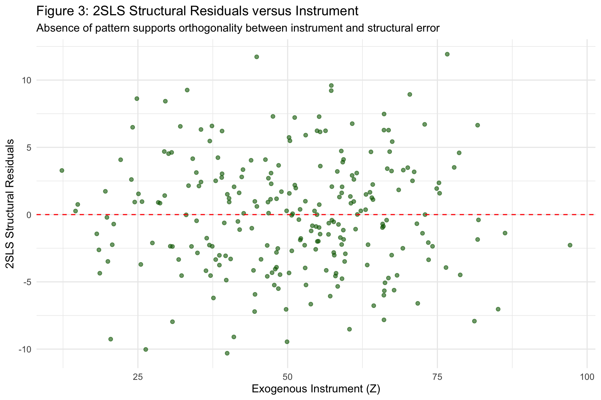

Instrumental Variables and Two-Stage Least Squares
Endogeneity, Instrument Validity, Weak Instruments and Hausman Tests
Author
Neena Abimbola Albarus
1. Theoretical Foundations and Methodological Overview
Ordinary least squares produces unbiased estimates of causal effects only when the regressor is uncorrelated with the error term. In observational social science, this condition is violated constantly. Countries that spend more on healthcare also tend to have stronger institutions, higher incomes, and better educated populations, all of which independently affect life expectancy. When we regress life expectancy on health spending alone, the OLS coefficient absorbs the influence of all those unobserved confounders and overstates the true causal effect. This is the endogeneity problem.
Instrumental variables estimation solves endogeneity by finding a third variable, called an instrument, that affects the endogenous regressor but does not directly affect the outcome except through that regressor. A valid instrument must satisfy two conditions. Relevance means the instrument actually predicts the endogenous regressor. Exogeneity, also called the exclusion restriction, means the instrument is uncorrelated with the structural error and affects the outcome only through the endogenous regressor.
The estimator that implements this logic is two stage least squares, or 2SLS. In the first stage, we regress the endogenous regressor on the instrument and obtain predicted values. In the second stage, we regress the outcome on those predicted values. The resulting coefficient is consistent for the causal effect, provided the instrument is valid. In this workbook, we construct a synthetic endogenous system with a known ground truth so you can see OLS bias and 2SLS correction in action.
⚠️ Common Pitfalls
Using a weak instrument. An instrument that barely predicts the endogenous regressor will produce 2SLS estimates that are biased and imprecise, sometimes worse than OLS. The first stage F statistic should be well above 10.
Forgetting that the exclusion restriction is untestable. Relevance can be checked directly. Exogeneity cannot. You must argue for it on theoretical grounds.
Interpreting 2SLS as automatically causal. 2SLS identifies a local average treatment effect for the compliers, meaning units whose behavior actually changes in response to the instrument. This is not the same as the average treatment effect for the whole population.
2. Data Pipeline and Endogenous System Construction
Before estimating anything, we locate the OWID data, filter to a single cross section, and construct a synthetic endogenous system with a known causal structure. The synthetic construction lets us verify that the estimators behave as theory predicts, since we know the true coefficients that generated the data.
# Dynamic path resolution across common working directoriespossible_paths <-c("../data/life_expectancy_data.csv","data/life_expectancy_data.csv","../../data/life_expectancy_data.csv","/Users/yawdgyal/Desktop/R for github/data/life_expectancy_data.csv","/Users/yawdgyal/Desktop/R for github/workbooks/data/life_expectancy_data.csv")data_path <- possible_paths[file.exists(possible_paths)][1]if (is.na(data_path) ||length(data_path) ==0) {stop("Could not locate 'life_expectancy_data.csv'. ","Searched the following paths:\n",paste(possible_paths, collapse ="\n") )}message("Loading data from: ", data_path)owid_raw <-read_csv(data_path, show_col_types =FALSE)if ("Entity"%in%names(owid_raw)) { owid_df <- owid_raw %>%rename(country = Entity,code = Code,year = Year,life_exp =`Life expectancy` )} else { owid_df <- owid_df %>%rename_with(tolower)}# Construct synthetic endogenous system with a known ground truthset.seed(2026)iv_df <- owid_df %>%filter(!is.na(code), !is.na(life_exp), year ==2015) %>%mutate(# Unobserved institutional quality (confounder U)unobserved_u =rnorm(n(), mean =0, sd =1.5),# Exogenous instrument Zinstrument_z =rnorm(n(), mean =50, sd =15),# Endogenous regressor X driven by Z and Uhealth_exp =100+1.8* instrument_z +2.5* unobserved_u +rnorm(n(), mean =0, sd =5),# Outcome Y driven by X and Ulife_exp_sim =50+0.15* health_exp +2.0* unobserved_u +rnorm(n(), mean =0, sd =3) ) %>%drop_na()glimpse(iv_df)
What is happening here: The possible_paths vector lets the workbook run from multiple working directories. We read the OWID CSV, defensively rename its columns, and filter to 2015. The synthetic construction generates three variables. unobserved_u is the confounding institutional quality that biases OLS. instrument_z is the exogenous instrument that shifts health spending but does not directly affect life expectancy. health_exp is the endogenous regressor, driven both by the instrument and by the confounder. life_exp_sim is the outcome, driven by the endogenous regressor and by the confounder. The true causal effect of health expenditure on life expectancy in this synthetic system is 0.15.
⚠️ Common Pitfalls
Confusing the synthetic construction with real data. The unobserved_u variable is built into the simulation but would never be observed in real data. That is the whole point of the exercise, because it shows what IV can do when an important confounder is invisible.
Forgetting that the synthetic treatment and outcome are not the real OWID values. The real life_exp column from OWID is not used. Only the country list and the year filter come from the raw file.
Losing track of the true coefficients. The simulation generates the data with coefficient 0.15 on health_exp. If your 2SLS estimate lands far from 0.15, the instrument is weak or the sample is too small.
3. Two Stage Least Squares Estimation and Diagnostics
With the synthetic system in place, we estimate three models. The biased OLS regression shows what happens when you ignore endogeneity. The first stage regression shows the strength of the instrument. The 2SLS regression shows the corrected causal estimate.
# Biased baseline OLS regressionmod_ols <-lm(life_exp_sim ~ health_exp, data = iv_df)# First stage regression of the endogenous regressor on the instrumentmod_stage1 <-lm(health_exp ~ instrument_z, data = iv_df)# Structural 2SLS regression using ivregmod_2sls <-ivreg(life_exp_sim ~ health_exp | instrument_z, data = iv_df)modelsummary(list("Biased OLS"= mod_ols,"First Stage"= mod_stage1,"2SLS"= mod_2sls ),stars =TRUE,gof_omit ="IC|Log|F")
Biased OLS
First Stage
2SLS
+ p < 0.1, * p < 0.05, ** p < 0.01, *** p < 0.001
(Intercept)
48.790***
100.609***
51.382***
(1.787)
(1.274)
(1.832)
health_exp
0.156***
0.143***
(0.009)
(0.009)
instrument_z
1.791***
(0.024)
Num.Obs.
246
246
246
R2
0.541
0.958
0.537
R2 Adj.
0.539
0.958
0.535
RMSE
4.20
5.96
4.22
# Formal IV diagnostic testsiv_diagnostics <-summary(mod_2sls, diagnostics =TRUE)print(iv_diagnostics$diagnostics)
df1 df2 statistic p-value
Weak instruments 1 244 5617.17269 1.924884e-170
Wu-Hausman 1 243 61.97682 1.150159e-13
Sargan 0 NA NA NA
What is happening here: The ivreg() function from the AER package fits the 2SLS estimator. The formula syntax life_exp_sim ~ health_exp | instrument_z says that health_exp is the endogenous regressor and instrument_z is the excluded instrument. The modelsummary() call shows all three regressions side by side so you can directly compare the OLS coefficient on health_exp with the 2SLS coefficient. The summary() call with diagnostics = TRUE produces the standard battery of IV diagnostics. The weak instruments test reports the first stage F statistic, which should exceed 10. The Wu Hausman test tests whether endogeneity is actually present, meaning whether OLS and 2SLS differ significantly. The Sargan test checks overidentifying restrictions, which is only available when you have more instruments than endogenous regressors.
⚠️ Common Pitfalls
Trusting a first stage F just above 10. The threshold is a rule of thumb, not a bright line. Values just above 10 are still risky in small samples. Values well above 30 are much more reassuring.
Reading the Wu Hausman p value as proof of endogeneity. A small p value is evidence that OLS and 2SLS differ, which is consistent with endogeneity, but it is also consistent with a weak instrument producing a noisy 2SLS estimate.
Reporting the 2SLS coefficient without the first stage. Readers need to see the strength of the instrument to judge whether the estimate is credible. Always show both stages.
4. Diagnostic Visualizations
The three figures below move from the first stage relevance relationship to the comparison between OLS and 2SLS slopes to the exogeneity diagnostic on the structural residuals. Together they tell the story of whether the instrument is credible and how much the 2SLS estimate differs from OLS.
Figure 1: First Stage Relevance Plot
fig1 <-ggplot(iv_df, aes(x = instrument_z, y = health_exp)) +geom_point(color ="midnightblue", alpha =0.7, size =2.5) +geom_smooth(method ="lm", color ="firebrick", se =TRUE) +theme_minimal(base_size =12) +labs(title ="Figure 1: First Stage Relevance Plot (Instrument Z versus Endogenous X)",subtitle ="Strong linear relationship confirms instrument relevance",x ="Exogenous Instrument (Z)",y ="Endogenous Healthcare Expenditure (X)" )print(fig1)

How to read this figure: Each point is a country. The horizontal axis is the instrument and the vertical axis is the endogenous regressor. The solid line is the first stage regression of the endogenous regressor on the instrument, with the shaded band showing its confidence interval. A steep, tightly estimated slope means the instrument is strong. A nearly flat line means the instrument is weak and will produce unreliable 2SLS estimates.
🔑 Key Takeaway: The tighter the first stage relationship, the more credible the 2SLS estimate. A first stage F well above 10 is the standard threshold, and the visual strength of this relationship is the first thing any reader will look at when they evaluate your instrument.
How to read this figure: The scatterplot shows the raw relationship between the endogenous regressor and the outcome. The solid red line is the OLS regression slope, which is biased upward because it absorbs the effect of the unobserved confounder. The dashed blue line is the 2SLS estimate, which is flatter because it isolates only the variation in the regressor that is driven by the instrument. The vertical gap between the two lines is the size of the endogeneity bias.
🔑 Key Takeaway: A 2SLS slope that is noticeably flatter than the OLS slope is consistent with positive confounding, which is common in observational public health and economics. If 2SLS and OLS are nearly identical, either the endogeneity is small or the instrument is too weak to detect the difference.
Figure 3: Structural Residuals versus Instrument
iv_df$residuals_2sls <-residuals(mod_2sls)fig3 <-ggplot(iv_df, aes(x = instrument_z, y = residuals_2sls)) +geom_point(color ="darkgreen", alpha =0.6) +geom_hline(yintercept =0, linetype ="dashed", color ="red") +theme_minimal(base_size =12) +labs(title ="Figure 3: 2SLS Structural Residuals versus Instrument",subtitle ="Absence of pattern supports orthogonality between instrument and structural error",x ="Exogenous Instrument (Z)",y ="2SLS Structural Residuals" )print(fig3)

How to read this figure: Each point is a country. The horizontal axis is the instrument and the vertical axis is the residual from the 2SLS regression. If the instrument is valid, the residuals should be uncorrelated with the instrument, which means the scatterplot should look like a shapeless cloud with no visible trend. Any systematic pattern, such as an upward slope or a U shape, is evidence that the instrument is correlated with the structural error, which violates the exclusion restriction.
🔑 Key Takeaway: A shapeless residual cloud is reassuring evidence for instrument exogeneity, though it is never definitive. Even a perfectly flat scatterplot here cannot rule out subtle violations of the exclusion restriction that happen to be orthogonal to the instrument in this particular sample. Theory, not this plot, is the ultimate justification for instrument validity.
5. Putting It All Together
You now have a complete instrumental variables workflow. You have constructed a synthetic endogenous system with a known causal structure, estimated a biased OLS regression, a first stage regression, and a 2SLS structural regression, run the standard IV diagnostics, and visualized the first stage, the OLS bias, and the exogeneity check.
The core decision rule is straightforward. Reach for OLS only when you have strong theoretical reasons to believe the regressor is uncorrelated with the error, which is rare in observational social science. Reach for 2SLS when you have a credible instrument that is strongly relevant and theoretically exogenous. Reach for limited information maximum likelihood or continuously updating estimators when the instrument is only moderately strong, because they have better small sample properties. Reach for weak instrument robust inference when the first stage F is below 10, because standard 2SLS confidence intervals will be misleading in that regime.
The first stage plot, the OLS versus 2SLS slope comparison, and the residual versus instrument scatterplot are your primary reporting devices. Together they tell the reader whether the instrument is strong, how much endogeneity bias was corrected, and whether the exclusion restriction looks plausible in the data. Instrumental variables is one of the most powerful tools in the empirical social science toolkit, but it is also one of the easiest to misuse. The diagnostics in this workbook are your first line of defense against the most common failure modes.